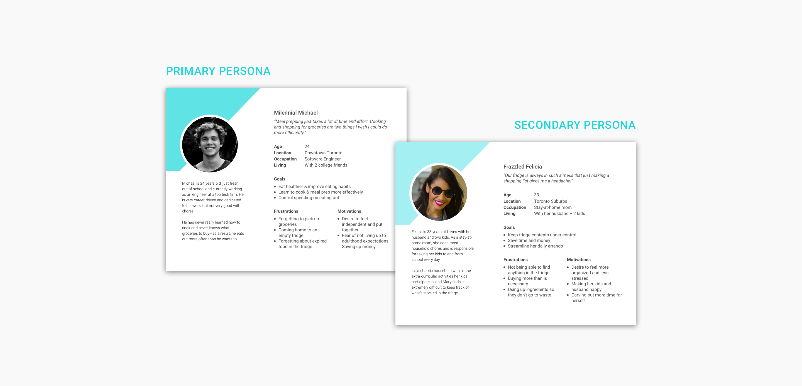

In the summer of 2017 I joined a team entering the University of Toronto’s Hatchery Entrepreneurship Program, a 4-month long accelerator and pitch competition that helps students bring their startup ideas to life. I became a co-founder of “Fridgit”--a smart inventory tracking device that changes the way you manage the food in your fridge.
THE CHALLENGE
Changing the way you manage food
For students, working professionals, and parents who must often balance a multitude of responsibilities and commitments, keeping track of food can be tough. Meal planning requires the time and effort that many people just don’t have--things like knowing what’s in your fridge now, what groceries you need to buy and when to buy them are easily overlooked.
Enter Fridgit, a retrofitting Internet of Things (IOT) device that turns your typical fridge into one that is smart and connected. Using machine learning based image recognition software, Fridgit tracks the movement of food in and out of your fridge, and uses this information to deliver expiration date reminders, grocery suggestions and recipe recommendations through a mobile app.
As cohorts of the Hatchery program, we were expected to deliver a working prototype and final product pitch within a 4-month timeframe. We knew that ensuring a good user experience would be crucial to Fridgit’s success, and would likely be the determining factor for consumers deciding whether or not to adopt the technology. Our goal was to create a product that could both enhance and simplify people’s lifestyles by helping users shop smarter, eat healthier, and reduce household food waste.
MY ROLE
The wearer of multiple hats
As the sole UI/UX designer on the team I was primarily responsible for designing the interface of our mobile app. I worked alongside 2 developers and 1 project manager to bring our ideas from paper sketches to a demo-ready prototype.
My role later transformed into something along the lines of a growth hacker, where I worked with our marketing strategist to solidify brand and product vision. I helped to also build a cohesive brand across all our marketing materials through the design of our logo, pitch deck and consumer facing website.
THE APPROACH
Lean, agile, startup UX
I. Discovery: User Research & Requirements
When I first joined the team there was no real design direction. We had the hardware and the software, but nothing our users could actually interface with! While the capabilities of our image recognition system were great, learning what actual value we could bring to users was a challenge on its own.
While our team had already done some market research prior, I pushed for us to release a more focused UX survey in order to get a better understanding of 1) what exactly users wanted and 2) what they actually needed. Through the survey we were able to identify users’ current pain points in the food management process, and understand the context in which users would use the product in their daily workflow.
Our target users were those who had experience using mobile applications, had a traditional refridgerator (non-smart fridge), and did their own grocery shopping. We were curious to know:
How often do users shop for groceries?
How many of our users live on their own, versus with others? How many people would usually be sharing a single fridge?
Do most users shop for just themselves, or their entire household? Do they share this responsibility with others?
What are the biggest paint points in users’ current food management workflow?
What kind of features would users find most useful to have? What information would users want displayed, and how?
What are users’ tolerance levels with regards to the accuracy and robustness of the technology?
We had 288 responses, half of which came from users aged 19-25 and 40% of which were users aged 26-65. About half of respondents were single, the other half married or in a relationship.
Key Insights:
Majority of users go grocery shopping at least once every week.
Over 90% of users live with at least one other person; less than 10% live alone.
More than half of users shop for themselves only, rather than the entire household.
More than half of users work over 40 hours per week.
The first thing users want to see upon opening the app is 1) everything that’s in their fridge, and 2) food expiry or restocking notifications.
The aspects of managing food inventory that users find most difficult include keeping track of expiry dates, estimating the quantity of food to buy, and having everything you need for a recipe.
To supplement the survey, I interviewed a few additional users to dig deeper into areas of the workflow that seemed to be of most concern. I wanted to know what a typical day looks like for a student versus working adult.
How does each type of user typically fit grocery shopping and/or meal prep into their daily workflows? Is grocery shopping usually scheduled as a task, or done on the fly?
How do users typically remember what they need to buy, or what’s currently in their fridge? Do they try to prepare a grocery list before hand? What happens if they forget?
Using insights garnered from both survey and user interviews, I was able to craft a set of personas representing each one of our user groups. I mapped out several use cases and scenarios to help guide us in determining functional requirements for what we decided would be a mobile app.

Using the survey we sent out, we were also able to get a sense of what sort of features our users thought were most important. In order of most to least important these features were:
Reminders about food going bad
Reminders about food low on stock
Storage advice for individual food items
Suggestions for grocery restocking
Built-in shopping list
And the less important nice-to-haves:
Nutritional facts for individual food items
Overall nutrition summary
Activity log detailing action history
Recipe suggestions
Semi- or fully- automated grocery delivery
Features 1-5 were by far the highest priority for our users. I sat down with our developers to tease out the technical limitations of our system and understand the design constraints I would have to work with. Things like,
What happens if Fridgit doesn’t recognize an item? What happens if Fridgit makes a mistake? How can users correct it?
How good is the quality of photos taken by Fridgit? What kind of information can Fridgit pull from an image? Colour? Quantity? Brand?
What kind of user input data can we store?
Taking all this into consideration, we eventually agreed on a solid set of requirements and functionalities that would be included in our minimum viable product (MVP).
II. Design: Ideation, Wireframing & Prototyping
Before doing any actual sketching, I usually like to get a sense of the general hierarchical structure I would like the application to follow. So with fridgit, I started off by building a sitemap of sorts off the requirements we had gathered previously, planning out the information architecture and navigational structure.
When it came to actually designing each screen, I bounced ideas off my teammates and looked into existing products with similar task flows for inspiration. Together we explored a variety of design options until chicken scratches eventually turned into low fidelity wireframes. Though we were crunched for time, I also met with representative users whenever I could to get feedback on the general layout and functional elements of the user interface. I made sure to validate some of the design decisions I had made with regards to specific user task flows (such as viewing food items, manual input/correction of items, creating a shopping list) to ensure we were heading in the right direction.
I would’ve loved to spend more time in the ideation and low-fidelity prototyping phase—there were many, many directions we could’ve gone in terms of the layout—but we didn’t exactly have the time (a familiar problem to all, I’m sure). With the pressure of our final pitch deadline coming up, I had to quickly transition into polishing up higher fidelity mocks that could be shown as a prototype on Demo Day.
The final prototype was made using Sketch + Invision. For the purposes of our demo video, I also learnt to animate a few interactions in Axure RP.
OUTCOME
Positive response and a whole lot learnt
We were among the Top 12 Hatchery teams invited to “Demo Day” to give our final pitch to a panel of judges. We were met with an overwhelmingly positive response from both the audience and judges, making us proud of what we were able to accomplish in such a short amount of time.
Since then, the team has put Fridgit on hold to explore other opportunities in our respective fields. To this day, we still receive the occasional nudge from a friend, colleague, or even complete stranger, asking us about Fridgit. Perhaps with a little more experience under our belts, Fridgit will once again become a product of the future.
The story behind our logo
I don’t do a ton of logo design, but as the only designer on my team…well, someone had to do it. So, with allowance for some creative freedom, the first thing I did was to get my team to brainstorm some words that they would want associated with our brand. Here were a few that we came up with:
Cool, fresh, clean
Innovative, high-tech, digital
Simple, dependable, organized
This was enough to get my creative juices flowing. With the name “Fridgit” in mind, I explored a whole range of options by playing around with colours, shapes, and fonts. Cool colours or warm? Soft edges or hard? I was thinking about how to convey our list of buzz words while trying to incorporate elements of a fridge—it was in our name after all!
As we progressed a little further with the tech, I had a talk with the team about our product vision, which included the future integration of voice artificial intelligence and having Fridgit act as an assistant similar to Apple’s Siri or Amazon’s Alexa. Through user research, I was able to gain some additional insight into users’ perception of our technology.
In our initial UX survey, we asked our users what they would prefer to think of Fridgit as. Other than a plain ol’ food inventory tracker, 25% mentioned “smart fridge companion”, and another 15% mentioned an assistant of sorts. So it was really no surprise that Fridgit started to turn into our own mini-mascot. We wanted to give Fridgit a personality--and so did our users!
(You might have noticed that we ended up landing on something quite similar to the android logo...not on purpose, but there’s a reason why everyone loves the little guy!)
All legitimate products have websites, right?
With our final pitch and demo day coming up, we thought it would be nice to have a simple client-facing website that could promote our brand, inform users of our product, and add anticipation to the future release of our product. As usual, I started with some low fidelity mockups, focusing mainly on layout and the organization of content. I collaborated with our marketing guru to determine what information we should include and what should be prioritized. I decided to keep the content to a single page for simplicity, but also so that we could control and direct the flow of information taken in by the user.
Eventually I started to incorporate branding elements, colours, and visual style into the design. The end result can be seen below.